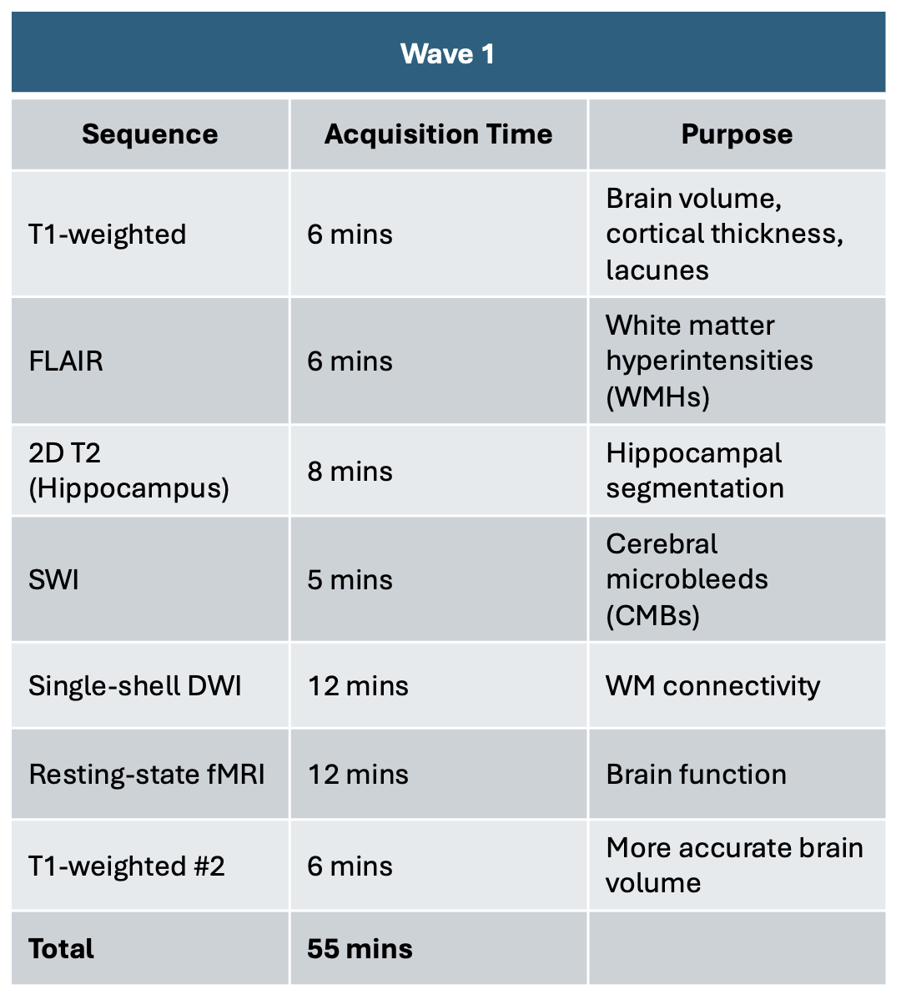

LASI-DAD conducted an N=137 pilot MRI study between 2018 and 2020 during its Wave 1 data collection.
Originally planned as an N=200 study, the pilot study was cut short due to the Covid-19 pandemic.
Scanning took place at three sites: Karnataka (National Institute of Mental Health and Neurosciences; NIMHANS, Bangalore), West Bengal (Institute of Neurosciences, Kolkata) and Maharashtra (NM Medical Center, Mumbai). The 55-minute pilot protocol consisted of two T1-weighted (T1w) images, T2 fluid-attenuated inversion recovery (FLAIR) imaging, high-resolution hippocampal T2-weighted (T2w) imaging, susceptibility weighted imaging (SWI), single-shell diffusion weighted imaging (DWI; b=1000 s/mm2) and resting state functional MRI (fMRI). It was implemented on 3 Tesla (3T) scanners and was based on the ADNI-3 MRI protocol.
The pilot study protocol is summarized in the figure below.

Data from the pilot study are available through the Image and Data Archive (IDA) online database hosted by the Laboratory of Neuro Imaging (IDA) at the University of Southern California.
All available MRI modalities are available to download in DICOM format. Permission to access the LASI-DAD IDA site can be requested by contacting Sarah Gao (gaosarah@usc.edu) from the LASI-DAD study team.